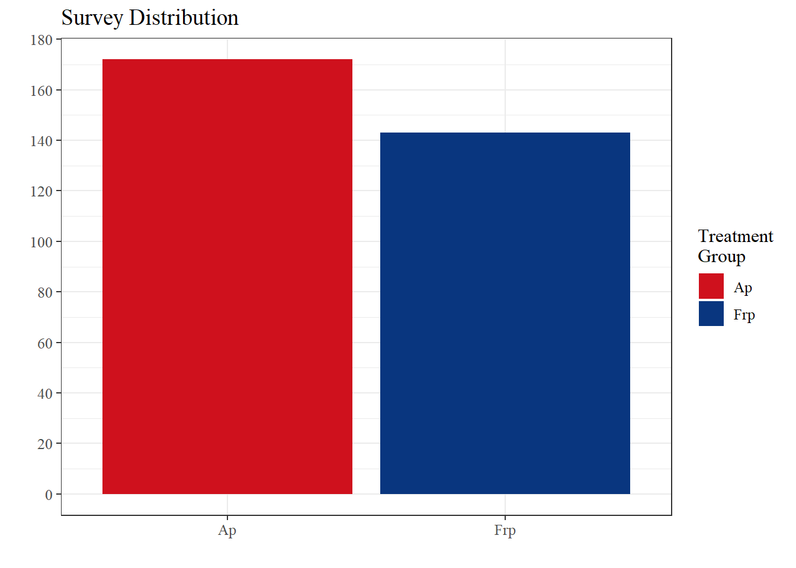
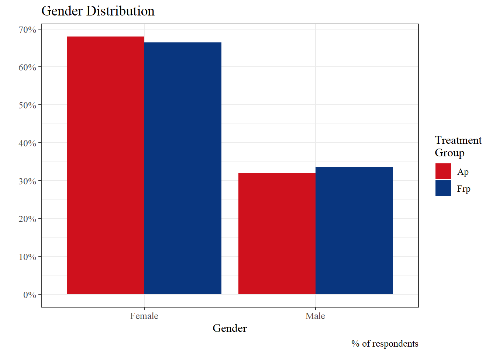
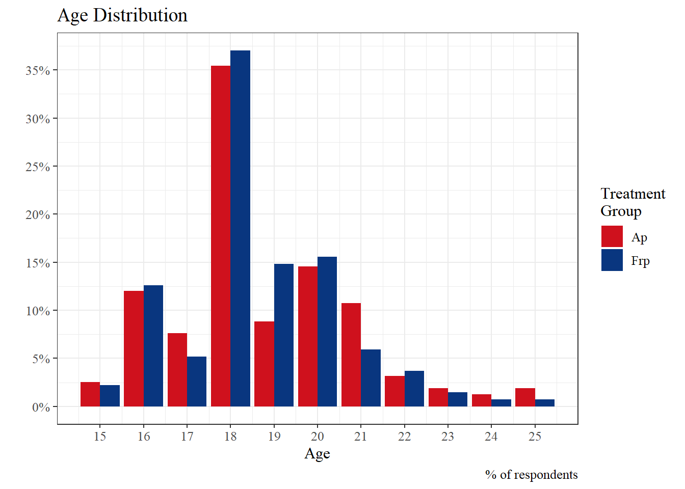
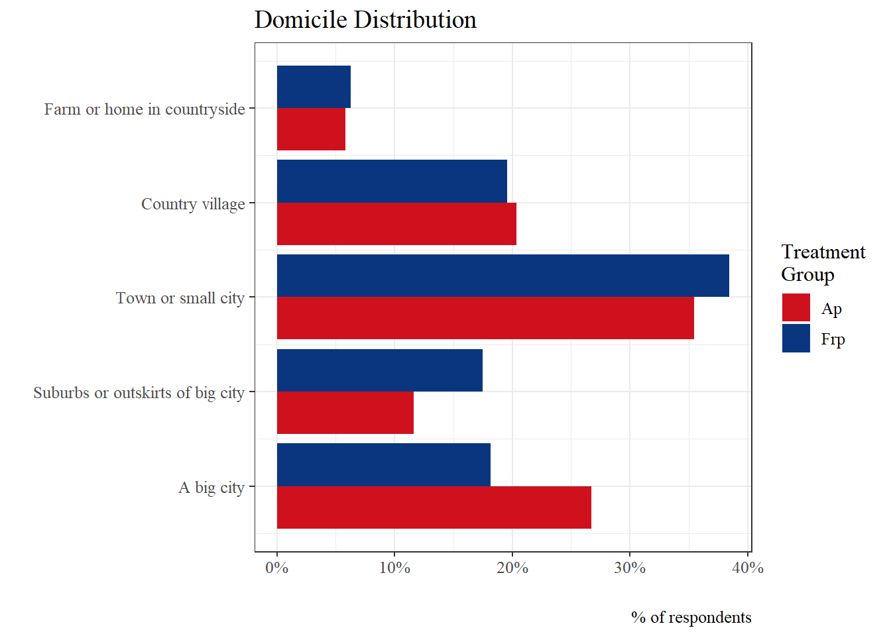
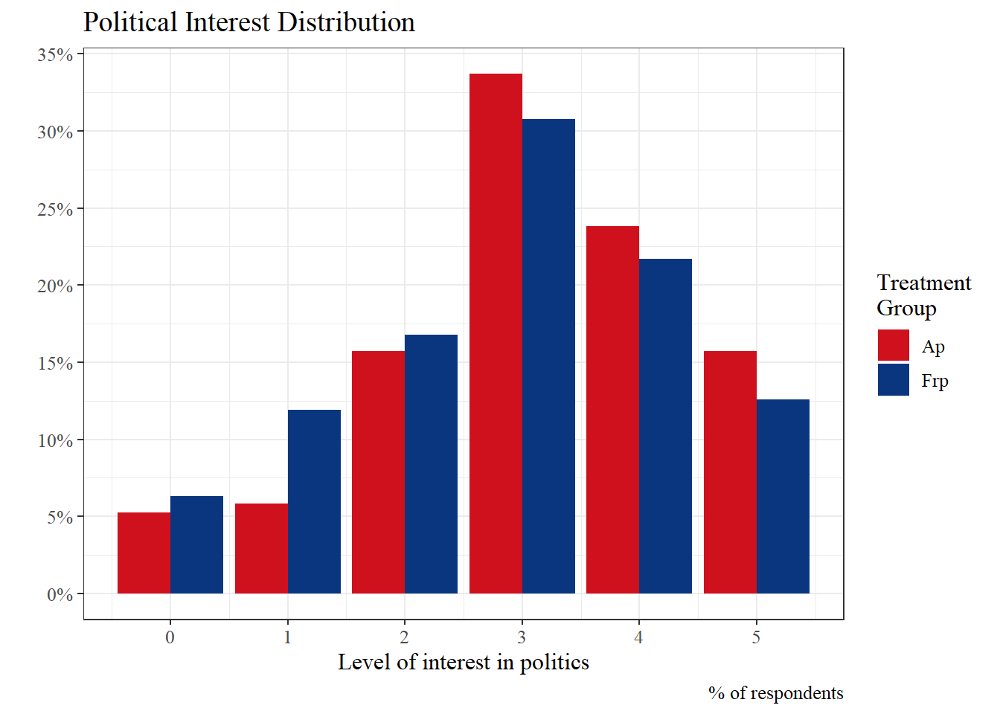
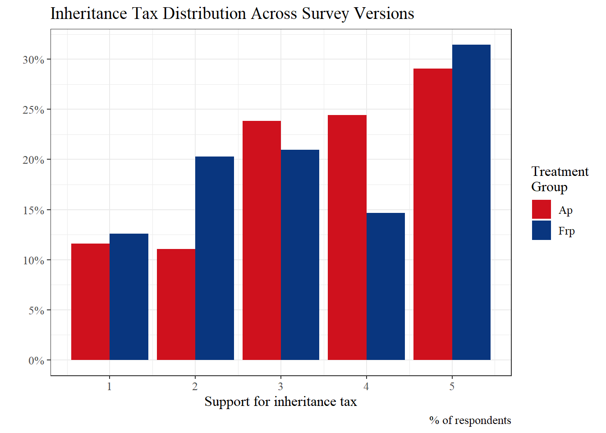
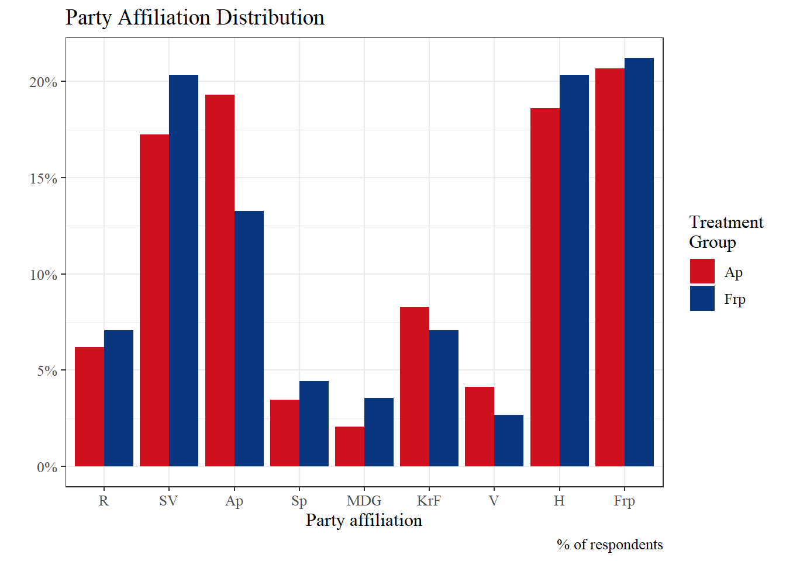
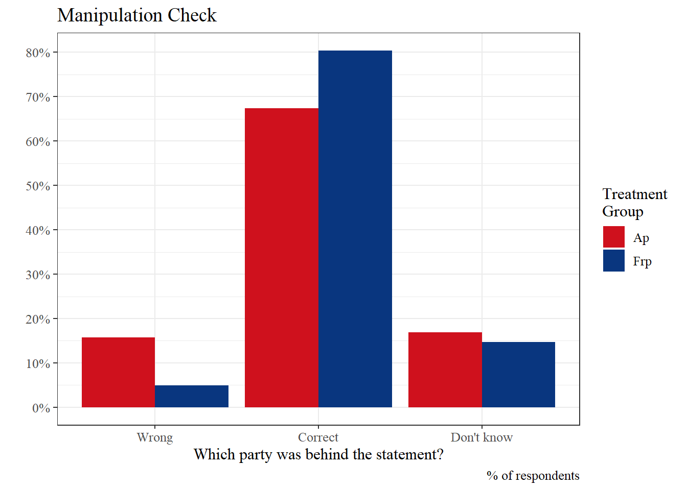
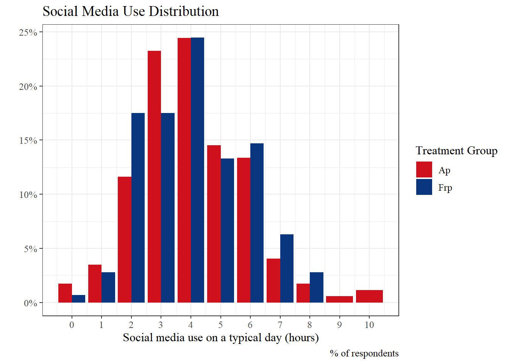

{kind=link}
{kind=link}
{kind=link}

Survey design
This section describes the experimental design and the composition of the survey sample. The goal of this study is to examine how party cues influence public opinion - specifically regarding inheritance tax among young people.
A/B testing
To examine how party cues influence young people’s opinions on inheritance tax, we implemented an A/B test (also called split testing). A/B testing is a controlled experimental approach in which participants are randomly assigned to one of two versions of a stimulus, allowing researchers to compare responses and determine the effect of a single change. This approach, commonly used in marketing and digital research, helps isolate the impact of specific interventions on attitudes or behaviour 1.
In this study, two versions of the survey were created. In one version, the inheritance tax statement was attributed to The Labour Party (Ap), and in the other, it was attributed to The Progress Party (Frp). Aside from the party attribution, the surveys were identical. Respondents were randomly assigned to one of the two versions, ensuring that any differences in responses could be attributed to the treatment rather than pre-existing differences between participants.
Survey Distribution and Descriptive Statistics
Survey Distribution
To ensure random assignment to the two survey versions, we developed a landing page containing a randomisation function that directed respondents to one of the two versions with equal probability. The landing page was made to be responsive, ensuring that it displayed correctly on all devices.
To verify the success of the randomisation procedure, we collected background data on gender, age, domicile, social media usage, and political interest. In addition to serving as a balance check, these factors function as explanatory variables in the subsequent analysis. As expected, the answer distribution appears balanced across the two survey versions, suggesting that any observed differences in the dependent variable are likely due to the experimental treatment rather than pre-existing differences between the groups.
Ideally, the number of respondents in each survey version should be approximately equal. As illustrated in the graph below, the final sample consisted of 315 respondents: 143 were assigned to The Progress Party (Frp) version and 172 to The Labour Party (Ap) version. Although the Ap version received 29 more respondents than the Frp version, this difference is within what can be considered normal random variation and does not indicate a failure of the randomisation procedure.
Respondents Profile
Gender Distribution
Question: What is your gender?
Options: Female, Male, Other/Refusal.

Age Distribution
Question: What is your age?
A few respondents were over the age of 25. Since our target group is young people, we excluded all respondents above this age. Consequently, only a small number of responses were removed. No one over the age of 25 is included in any analyses or in the graphs visualizing the differences between survey distributions.

Domicile Distribution
Question: Which of these categories best describes the area where you live?
Options: A big city, Suburbs or outskirts of big city, Town or small city, Country village, Farm or home in countryside

Political Interest Distribution
Question: How interested are you in politics?
Options: 0 = Not interested at all, 5 = Very interested

Experimental Treatment and Post-Treatment Questions
Inheritance Tax Support Distribution
Question: [The Labour Party / The Progress Party] believes that there should be no tax on inheriting large assets. To what extent do you agree or disagree with this statement?
Options: 0 = Strongly disagree, 5 = Strongly agree
As shown in the figure below, there is noticeable variation between the two survey versions. This is particularly evident in the distribution of responses at 2 and 4, where the frequencies differ substantially between the two groups. This pattern is consistent with the expectation that respondents’ attitudes are influenced by the party associated with the policy proposal.

Party Affiliation Distribution
Question: Which political party do you feel closest to?
Options: Rødt (R), Sosialistisk Venstreparti (SV), Arbeiderpartiet (Ap), Venstre (V), Kristelig Folkeparti (Krf), Senterpartiet (Sp), Høyre (H), Fremskrittspartiet (Frp), Miljøpartiet De Grønne (MDG), Other, Refusal, Don’t know
This question was asked after the treatment, which may explain why more respondents chose The Labour Party (Ap) following the Ap treatment than following the Frp treatment, as the party was still fresh in their memory. The order of the answer options for this question was randomized, preventing one party from receiving more selections simply because it appeared first.

Manipulation Check
Question: Which party made the statement you just read about inheritance tax?
Options: The Labour Party (Ap), The Progress Party (Frp), Don’t know
Here, the responses have been recoded as either correct or incorrect. As shown in the figure, a larger share of respondents answered incorrectly in the Ap survey version, identifying The Progress Party (Frp) as the source of the statement when it was in fact made by The Labour Party (Ap). This is not surprising, as Frp is more strongly associated with opposition to taxation than Ap.
This figure also shows that, out of the total 315 respondents, 84 either answered incorrectly or selected Don’t know.

Social Media Usage Distribution
Question: How many hours per day do you spend on social media?
Options: 0-10 (hours per day)
